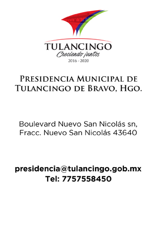

<!--
  Generated template for the NosotrosPage page.

  See http://ionicframework.com/docs/components/#navigation for more info on
  Ionic pages and navigation.
-->
<ion-header>

  <ion-navbar color="primary">
    <ion-title>Nosotros</ion-title>
    <ion-buttons>
    <button ion-button
            icon-only
            menuToggle>
      <ion-icon name="menu"></ion-icon>
    </button>
  </ion-buttons>
  </ion-navbar>

</ion-header>


<ion-content class="card-background-page" >
<ion-card class="img">
    
  </ion-card>

  <ion-fab right bottom>
  <button ion-fab color="primary"><ion-icon name="arrow-dropleft"></ion-icon></button>
  <ion-fab-list side="left">
    <button ion-fab (click)="facebook()"><ion-icon name="logo-facebook"></ion-icon></button>
    <button ion-fab (click)= "twitter()" ><ion-icon name="logo-twitter"></ion-icon></button>
    <button ion-fab (click)="youtube()"><ion-icon name="logo-youtube"></ion-icon></button>
    <button ion-fab (click)="sitio()"><ion-icon name="logo-chrome"></ion-icon></button>
  </ion-fab-list>
  </ion-fab>
</ion-content>
